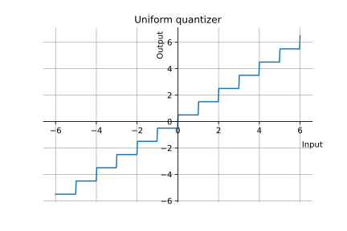

Quantization
Vicente González Ruiz
January 25, 2020
- A quantizer discretizes the amplitude of a PAM signal
(where
is an analog signal,
and
is sampling period), producing an analog PCM signal .
Therefore, quantization maps the real (analog) values of samples into a
discrete set of real values, also [2].
- The quantization process can be modeled as
|
| (1) |
being
the quantization error (also called, quantization noise). Therefore, quantization
produces a loss of information.
- Quantizers are defined from their set of
(decision levels)
and (representation
levels).
must be finite.
- Another design parameter of quantizers is the definition of the decision boundaries
and
,
()
that define the low and high overload regions as
|
| (2) |
- The performance of the quantizer is measured as the distance between the input
and the
output
Thus, the MSE is
|
| (3) |
where
is the probability density function (PDF) of
and
the expectation.
2 Scalar quantization
- For the sake of simplicity, lets denote
as the inputs of the quantizer and
as the outputs. In a scalar quantizer, each input sample
is individually quantized as .
- The quantization error
can be modeled as a noise process which: (1) is uncorrelated to
the input, (2) is white, and (3) follows a uniform distribution.
However, notice that this is a fair approximation only if
[2].
3 Uniform (lineal) scalar quantization
- In an uniform quantizer, the quantization step
satisfies that the input range is divided into intervals
|
| (5) |
Notice that, all the intervals have the same size and that
It also holds that
- Under the premise that
is uniform, and considering that
(something quite
reasonable when
can be considered also uniform) the average quantization error is
( is the
meximum and
is the minimum), and for this particular case
|
| (8) |
- Uniform quantizers are used in most A/D (analogic/digital) converters, were
it is expected the generation of uniformely distributed sequences of
samples.
- El error de cuantificación promedio en un cuantificador
lineal depende del paso de cuantificación y es igual a
( es el
máximo y
el mínimo). Por tanto,
|
|
- Como se puede apreciar de esta expresión, la relación señal/ruido promedio
es directamente proporcional a la inversa del paso de cuantificación elevado a
cuadrado, es decir,
- Si usamos PCM (Puse Code
Modulation)
para representar las muestras cuantificadas
,
se cumple
donde
es el número de bits utilizados para representar los niveles de representación.
Es decir, a mayor número de bits, menor paso de cuantificación.
- Por tanto,
- Finalmente, “tomando Decibelios”,
|
|
- Este resultado es interesante porque indica que, en un sistema PCM, con cada
bit de precisión mejoramos la calidad de la señal digitalizada en un factor de
dB. Si
consideramos que para alcanzar una calidad HiFi (High Fidelity) en audio debemos
conseguir
dB de relación señal/ruido, deberemos usar
valor que coincide con la resolución usada en los CDs de audio!
3.1 Using codewords (encoding)
3.2 Example
Quantize Jfk_berlin_address_high.ogg using
.
Compute the variance of both audio sequences.
Example (uniform quantization)
IPython notebook
4 Non-uniform quantization
- In order to minimize the maximun, average or the total quantization error,
can be adapted to the characteristics of .
4.1 Companded quantization
- Non-uniform quantizer.
- Companding: COMpressing + exPANDING. The original signal is mapped
through a compressor, quantized using an uniform quantized, and
re-mapped using the corresponding expander. The result is a logarithmic
quantization.
- -law
example:
Ipython notebook

5 PDF-optimized quantization
- Non-uniform quantizer.
- if we known the probability distribution of the samples, we can select a
small
for the most probable samples and viceversa.
6 Adaptive quantization
- Useful when the characteristics of
(the variance, for example) vary over time.
- Typically, the quantizer varies
depending on such characteristics.
7 Forward adaptive quantization
- Used for determining a suitable
for blocks of samples.
-
7.0.1 Encoder:
- While samples in :
- Read into
the next
samples of .
- Determine ,
minimizing the quantization error, and output
(or the data necessary for its determination).
- Quantize
and output it.
-
7.0.2 Decoder:
- While data in input:
- Read
(or the data necessary for determining it, and in this case, use
the same algorithm that the used by the encoder).
- “Dequantize”
and output it (note that the dequantization is only a way of
calling the process of reverting the original range of the quantized
signal).
- The selection of
is a trade-off between the increase in side information needed by small block
sizes and the loss of fidelity due to large block sizes.
- Forward adaptive quantization generates a
delay (buffering),
where is the
sampling rate of .
8 Backward adaptive quantization
- Only the previously quantized samples are available to use in adapting the
quantizer.
- Idea: If happens that
is smaller than it should be, the input will fall in the outer levels of the
quantizer a high number of times. On the other hand, if
is larger than it should be, the samples will fall in the inner levels a high
number of times.
-
8.0.1 Encoder:
- .
- While
is not exhausted:
- Quantize the next sample.
- Observe the output and refine .
-
8.0.2 Decoder:
- .
- While
is not exhausted:
- “Dequantize” the next sample.
- Step 2.B of the encoder.
9 The Jayant quantizer [1]
- Adaptive quantization with a one word memory ().
- A Jayant quantider defines the Step 2.B. as: Define a multiplier
for each quantization level ,
where for the inner levels
and for the outer levels ,
and compute:
where
was the previous quantization step and
the level multiplier for the -th
(previous) sample. Thus, if the previous ()
quantization used a
too small (using outer quantization levels) then
will be larger and viceversa.
- Depending on the multipliers ,
the quantizer will converge or oscillate. In the first case, the quantizer will
be good for small variations of
but bad when a fast adaption to large changes in
is required. In the second one, the quantizer will adapt quickly to fast
variations of
but will oscillate when
changles slowly.
- Most Jayant quantizers clip the computation of
to avoid generating a zero output quantizer in those contexts where
is zero or very close to zero, and to improve the adaptation to smaller
samples after a sequence of bigger ones (avoiding to grow without limit):
10 Adapting with a scale factor
- A Jayant quantized adapts the quantization step to the dynamic range
of the signa using a set of multipiers. A similar effect can be provided by
dividing the input signal by a scale factor defined iteratively as:
|
| (10) |
10.1 Example
Quantize Jfk_berlin_address_high.ogg using
-bits
backward adaptive Jayant quantizer. Reproduce the quantized sequence and provide
a subjective comparison with the original sequence.
11 Vector quantization
- Samples are quantized in groups (vectors).
References